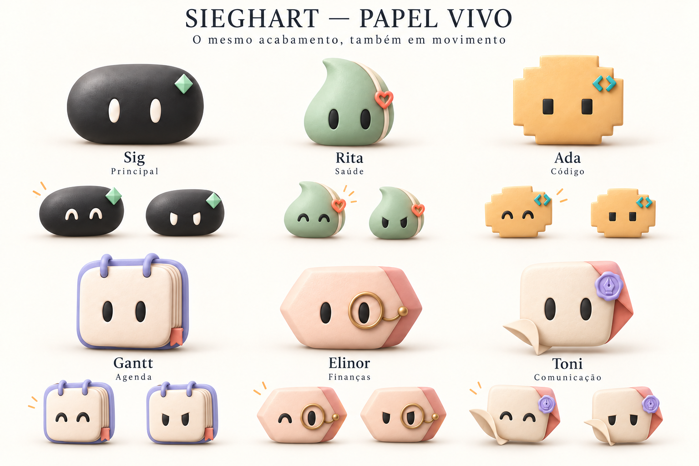

Seis identidades. Movimento com volume.
Conceito para revisão · 60 fps
Nova revisão: entrada da equipe, Rita sem faixa, papel da Toni e catálogo de movimentos
Chegada, saudação e acomodação em repouso.
